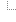
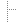

SyDump
|
| Introduction | Features | Directory Layout | Program Syntax | Rights and Redistribution |
| Installation | Frequently Asked Questions | Compression | User Interfaces | Security |
In addition to a command line interface, the package provides a user interface through an ascii menu (menu.pl) and from a web page (cgi.pl). The web page interface requires that you have a web server on the same machine that you are running your backups from or that you have rsh access (unix only) between your systems. Normal backup operations will be started automatically from your scheduling system (cron on UNIX or any of a number of windows schedulers) using the command line interface. The menuing systems will provide you the ability to view problems, and to recover from disasters.
This package is released as commercial software from the Sybase shareware web site and this site should be checked periodically to find any future releases. The latest version of the package can be < A HREF=http://www.edbarlow.com/download/latest.tar.gz> download as a gzipped tar file. Note that some older browsers strip off multiple extension names. If the file does not open once it is downloaded, check that the file contains the extension .tar.gz (compressed tar file) and rename the file if it does not. After you have downloaded, follow instructions in the installation section. If you have any comments, please contact SQL Technologies.
This package is intended for "normal" Sybase installations. Specifically, it relies on dumping the databases to disk. Your system administrator is then responsible for backing up to tape. No provision is made by this package for very large databases. If you have huge databases and, for example, require table level dbcc, you will need to create your own scripts to perform these operations. All operations performed by this package (except rebuilding indexes and bcp_out) are performed on a full database level.
| Base Backup Directory | e.g. C:/backups (on NT) or /dbdumps (on UNIX) per config file | |
 |
.../$SERVER | Sub directory for your Server |
 |
.../audits | Directory to put audit results (optional) |
| .../bcp | Directory to put bcp level backups (optional) | |
| .../dbcc | Directory for raw dbcc output | |
| .../dbdumps | Directory for local server dumps | |
| .../errors | Directory for error messages | |
| .../logdumps | Directory for local server tran log dumps | |
| .../sessionlog | Directory for run logs (necessary if you are running from a scheduler like cron) |
Note the beauty of this layout. Because error messages are written to files in an error directory, you only need to peruse this directory on a daily basis. If any files are in this directory there is a problem! The other directories contain enough information to resolve the problem (i.e.. a full log of the session is in the sessionlog sub directory and the raw dbcc output is in the dbcc directory...). The administrator is responsible for cleaning the error directory after reading the files it contains. Remember, files are only created in the error directory if a problem is encountered. Session logs and dbcc output are kept in sessionlog and dbcc sub directories, but will probably never need to be used unless you are debugging a problem. The dbdumps and logdumps sub directories contain the actual dumps. The audits sub directory contains the output of the server configuration reports, and contain system configuration information sufficient to rebuild your server after a system failure.
To the best of my knowledge this program works as specified, but there is expressly no warranty with the software. It is ok for you to modify any of the programs (so long as you don't remove any of the copyright notices). If you make any changes that make the tool better, send the changes to me so all can have them.
Purge Old
Dumps (if necessary use rsh)
Dbcc Databases
Dump Tran
Log
Full Dump
Check
for Required Database Loads
Update
Statistics
Run Audit
Optional
Table Level Bcps
Compress
The Dumps (if necesary use rsh)
Rebuild
Indexes
Usage: Usage: backup_pl -JJOB -t|-f [-dh]
This is the master driver for the backup scripts. It relies on the
Job being defined in the configure.cfg (located in backup scripts directory
or one level above it). It follows instructions and performs the
appropriate tasks as needed. -t for transaction log dumps only, -f
for full backups. -d is debug mode and -h is html output.
You can also specify -DDB_LIST to restrict databases operations are performed
on further.
| dbcc_db.pl | a utility to run dbcc's | |
| load_database.pl | load your databases | |
| stop_sybase.pl | stop Sybase | |
| update_stats.pl | run update statistics | |
| dump_database.pl | dump databases | |
| config_report.pl | configuration reports | |
| rebuild_index.pl | Rebuild your indexes |
Usage: dbcc_db.pl -USA_USER -SSERVER -PSA_PASS -DDB_LIST
-D DB_LIST (pipe separated list with
wildcards of databases)
-d
(debug mode)
-h
(html output)
-e errorlog (optional)
-l sessionlog (optional)
Standard naming for dump files should be
{SERVER}.{DATABASE}.dbdump.yyyymmdd-hhmmss
or
{SERVER}.{DATABASE}.dbdump.yyyymmdd.hhmmss.S1
through
{SERVER}.{DATABASE}.dbdump.yyyymmdd.hhmmss.SN
if the backups are striped.
Usage: load_database.pl -nnum_stripes -USA_USER -SSERVER
-PSA_PASS -Ddb -ifile_root -tdhk
-n Num stripes (.SX appendended to dump name)
-D DB_LIST (pipe separated
list with wildcards of databases)
-i DIR
(input file root)
-t
(Dump Transaction Log only)
-d
(debug mode)
-h
(html output)
-r extension (rename file extension (dbdump
part of name) when done)
-e errorlog (optional)
-l sessionlog (optional)
Usage: set_dboption.pl -USA_USER -SSERVER -PSA_PASS -DDB_LIST -Ooption -Vvalue
-D DB_LIST: may include wildcards or pipe separated
list of databases
-d debug mode
-h html output
-l logfile
-e errorfile
-V value true or false
Usage: stop_sybase.pl -USA_USER -Sopt_S -PSA_PASS
USAGE: update_stats.pl -UUSER -SSERVER -PPASS [-DDB] -D DB_LIST (pipe separated list with wildcards of databases) -s (silent mode) -d (debug mode) -h (html output) -e errorlog (optional) -l sessionlog (optional)
It will also warn if user databases have select into set but do not have trunc. log on chkpt set. The dump files will have a .tmp in them until the dump is completed, at which point they will be renamed with the .dbdump or .logdump extension if the -r option is specified.
Usage: dump_database.pl -nnum_stripes -USA_USER
-SSERVER -PSA_PASS
-DDB_LIST -oDIRECTORY -tdhf
-n Num stripes (.SX appendended to dump name)
-D DB_LIST (pipe separated
list with wildcards of databases)
-o DIR
(output directory)
-t
(Dump Transaction Log only)
-f
(Full Dump - default)
-d
(debug mode)
-h
(html output)
-e errorlog (optional)
-l sessionlog (optional)
Dump a database to the specified directory in with
the name
{SERVER}.{DATABASE}.dbdump.yyyymmdd.hhmmss
or
{SERVER}.{DATABASE}.dbdump.yyyymmdd.hhmmss.S?
where ? is a number 1 to the number of stripes if
the backups are striped
WHAT IT PRINTS
SERVER: srvname
@@version
helpdb
configure
helpmirror
vdevno
helpdevice
helplogin
helpuser by db
all the reverse engineering routines"
SERVER: srvname
@@version
helpdb
configure
helpmirror
vdevno
helpdevice
helplogin
helpuser by db
all the reverse engineering routines
Requires: Requires the extended stored procedure library
Usage: config_report.pl -USA_USER -SSERVER -PSA_PASS -oFILE
-o FILE
(output file)
-h
(output in html format)
-e errorlog (optional)
-l sessionlog (optional)
Usage: rebuild_index.pl -UUSER -PPASS -SSERVER -DDB [-oOUTFILE|-iINFILE] -c Index Comparator. Extracts indexes for a DB and then allows you to compare the saved indexes to the indexes on your servers. -o : if outfile specified then creates a file with the indexes from the server. This file can be used as an infile for further comparisons. -c : correct duplicate keys in indexes. Deletes duplicate data. One random row in unique indexes will be kept. -r : report only - this will report missing indexes as well as duplicate data but will not rebuild any indexes. note that this program requires sp__revindex (extended stored proc library)
The colors in this section indicate what type of variables they are. Most variables are shown in purple and can be set up on a per server basis by preding an underscore and server name to the variable. Only the last encountered instance of a key will be used. This overrides the general option. e.g.
SYBPROD_IGNORE_LIST=model|tempdb|sybsyntax|testdb|testdb23
SYBPROD_NUM_BACKUPS_TO_KEEP=4
Finally, the following variables MUST be set only on a per server basis. The following example will copy prod_db1 to copy_of_prod_db1 and will copy prod_db2 to copy_of_prod_db2 from SERVER SYBPRODUCTION to SERVER COPYSERV.
COPYSERV_ XFER_FROM_SERVER=SYBPRODUCTION
COPYSERV_XFER_FROM_DB=prod_db1|prod_db2
COPYSERV_XFER_TO_DB=copy_of_prod_db1|copy_of_prod_db2
The BASE_BACKUP DIR should have adequate space for all your backups.
If you need multiple file systems for this (due to a system 2GB file system
limitation), dont worry at this point. Let the configure script (next step)
create the directory tree under the base directory created in this step
- and then mount additional file systems into the mount points created
by configure. If you have specific error handling in mind, edit on_error.pl,
which is the script that handles all errors. This script is easily
modifiable.
You can make special weekend jobs and other special jobs by creating
multiple jobs that do that work.
#=============================================================================
#
# PERL BACKUP SCRIPTS CONFIGURATION VARIABLES
#
# Most of these can be overridden on a per "job" basis by prepending
the
# job name at the beginning of the variable. You can then
run backup.pl -Sjob
# to get that configuration. This way you can have multiple
schedules for
# a single server (eg. call the backup of SYBPROD on a nightly
basis
# SYBPROD_NIGHTLY and on weekengs SYBPROD_WEEKEND)
# SYBASE=[ Sybase Directory On This Machine ]
# - cant be overridden on a per job basis
# - not currently used
SYBASE=/opt/sybase
# IGNORE_SERVER
# Pipe separated list of servers to ignore
# DSQUERY=[ A Sybase DSQUERY ]
# The dsquery for the given server. Defaults, if unset, to
the server name.
# You will want to override this (ie. SYBPROD_NIGHTLY_DSQUERY=SYBPROD
)
# in the case where the server name is not the same as the
job name
DSQUERY=
# BASE_BACKUP_DIR=[ Root Directory of Backup Tree ]
# this is the directory on the local system to store logs and backups
in.
# if it is not a remote system, it also is the place where backups
go
# if it is a remote system, the rsh_dir is that location
# - cant be overridden on a per job basis
BASE_BACKUP_DIR=/optapp2/syb_admin
# REMOTE_DIR=[ directory ]
# directory as seen by the Sybase Server that is equivalent to
BASE_BACKUP_DIR.
# If not set it defaults to BASE_BACKUP_DIR (it assumes the server
is local).
# If local, keep it = to BASE_BACKUP_DIR
# If Remote and NFS cross mounted drives, set this and keep IS_REMOTE=n
# If Remote w/no NFS, then set to where you want backups and be
sure to
# set up rsh access as per instructions.
# - This will be overridden for remote servers
REMOTE_DIR=
PORTIA30_REMOTE_DIR=/opt2/sybdump
CLEARPROD2_REMOTE_DIR=/opt2/sybdump
SYBPROD2_REMOTE_DIR=/opt2/sybdump
# IGNORE_SERVER= [ Servers to ignore cause you want backups stopped
on em ]
# these servers will not be run with backup.pl -Ssrv And will not
be loaded
# from any machines
# - pipe separated as in server1|server2...
# NUM_BACKUPS_TO_KEEP=[ A Number >=1 ]
NUM_BACKUPS_TO_KEEP=1
SYBPROD2_NUM_BACKUPS_TO_KEEP=2
# NUM_DAYS_TO_KEEP
# For other backup files (log files etc), this is the number
of days
# to keep stuff for prior to removing it)
NUM_DAYS_TO_KEEP=7
# NUMBER_OF_STRIPES=[ A Number ]
# number of stripes for the backups.
NUMBER_OF_STRIPES=5
# COMPRESS=[ external compression program e.g. /usr/local/bin/gzip
]
# should be a full path name on whatever system the backups live
on so
# remote systems might have other locations. i prefer gzip
to compress.
COMPRESS=/usr/local/bin/gzip
# UNCOMPRESS=[ external uncompression program e.g. /usr/local/bin/gunzip
]
# Exact opposite of the above
UNCOMPRESS=/usr/local/bin/gunzip
# IGNORE_LIST=[ pipe separated list of databases to ignore ]
# e.g. model|tempdb|sybsyntax
# you will override this on a per job basis with useless/test dbs
that you
# dont want to backup or dbcc
IGNORE_LIST=model|tempdb|sybsyntax
SYBPROD2_IGNORE_LIST=model|tempdb|sybsyntax|portia50h_old|sybsystemprocs
CLEARPROD2_IGNORE_LIST=model|tempdb|sybsyntax|wpg_portia
PORTIA30_IGNORE_LIST=model|tempdb|sybsyntax|wpg_portia|dbtest1|dbtest2
SYBPROD2WEEKLY_IGNORE_LIST=model|tempdb|sybsyntax|portia50h_old|sybsystemprocs
CLEARPROD2WEEKLY_IGNORE_LIST=model|tempdb|sybsyntax|wpg_portia
PORTIA30WEEKLY_IGNORE_LIST=model|tempdb|sybsyntax|wpg_portia|dbtest1|dbtest2
# MAIL_TO is comma separated list of email addresses to alert when
there is
# a problem.
MAIL_TO='ebarlow@a.com,barlowedward@hotmail.com'
# DO_COMPRESS=[y|n] - should you do compression on backups
DO_COMPRESS=y
# DO_UPDSTATS=[y|n] - should you do update statistics as part
of normal backup
DO_UPDSTATS=n
SYBPROD2WEEKLY_DO_DBCC=y
PORTIA30WEEKLY_DO_DBCC=y
CLEARPROD2WEEKLY_DO_DBCC=y
# DO_AUDIT=[y|n] - should you do audit as part of normal backup
DO_AUDIT=y
# DO_DBCC=[y|n] - should you do dbcc's as part of normal backup
DO_DBCC=n
SYBPROD2WEEKLY_DO_DBCC=y
PORTIA30WEEKLY_DO_DBCC=y
CLEARPROD2WEEKLY_DO_DBCC=y
# DO_BCP=[y|n] - should you do bcp's as part of normal backup
DO_BCP=n
# if DO_BCP=y then this is a | separated list of tables to bcp out
BCP_TABLES=
# DO_INDEXES=[y|n] - should you do indexes as part of normal
backup
DO_INDEXES=y
# DO_DUMP=[y|n] - should you do backups as part of normal
backup
DO_DUMP=y
# DO_LOAD=[y|n] - should you do loads (if defined) as part
of normal backup
DO_LOAD=y
# DO_PURGE=[y|n] - should you do purges as part of normal
backup
DO_PURGE=y
# IS_REMOTE=[y|n] - is this system remote. ie.
the current machine does
# not have direct access to the disks that will store the
IS_REMOTE=n
PORTIA30_IS_REMOTE=y
PORTIA30WEEKLY_IS_REMOTE=y
CLEARPROD2_IS_REMOTE=y
CLEARPROD2WEEKLY_IS_REMOTE=y
SYBPROD2_IS_REMOTE=y
SYBPROD2WEEKLY_IS_REMOTE=y
#
#RSH_HOST=host
# The host this server lives on that you can rsh to. Only
useful if IS_REMOTE
# and only used in conjunction with REMOTE_DIR
RSH_HOST=
PORTIA30_RSH_HOST=customer2
CLEARPROD2_RSH_HOST=customer2
PORTIA30WEEKLY_RSH_HOST=customer2
CLEARPROD2WEEKLY_RSH_HOST=customer2
#
# REBUILD_INDEX_DB=db|db|db - list of databases to rebuild indexes
on
# REBUILD_INDEX_FILE=file|file|file File to rebuild indexes for
given database
REBUILD_INDEX_DB=
REBUILD_INDEX_FILE=
# END CONFIGURATION OF BACKUP SCRIPTS
#
#=============================================================================
Compression is optional. There are some gotcha's if you do compression. Firstly, to compress you need double the disk space of the dump files (it makes a copy). This can cause all kinds of disk errors if you are not careful. Secondly, the compression will fail on UNIX due to permission violations when run by any account except Sybase or root (not recommended). The error will be : permission violation (cant modify to file).
You probably want it to run as a user in group Sybase (so you can use Sybase for something else). If this is the case, test starting a server - you could easily bomb on permissions. To set up as a member of group Sybase, remember that permissions should be set for group.
I get permission violations when running: The scheduler should run out of the same account that runs the Sybase server. On UNIX it should not run as root (if you run out of root, you should do a "su - Sybase -c" but this is not recommended). In fact to make this a little more clear, almost every real problem I have ever encountered with the scripts has been by people using "su - Sybase -c..." instead of running out of sybase's crontab (so just dont do it).
How can i find if there were problems last night: A session log AND a separate error log are created for each run. The error log is removed after the run if it is empty. So, to tell if there were problems just look in the errors subdirectories in the output file tree. If there are any files there, there were problems. Remove these files each day and you will know if there are any events that need attention. Additionally, the default error handler sends you mail with any problems.
I need to set up paging for problems: You will need a script that sends pages and to add it to the on_error.pl file. See the section on error handling.
The cood looks funny (tabbing is wierd): All scripts can be viewed and edited best with tabstop=3.
Are there any bad table names? If you have tables with the string corrupt in it, you may have trouble with the dbcc program. corrupt is a keyword for dbcc errors.
IF THERE ARE MULTIPLE SERVERS DEFINED